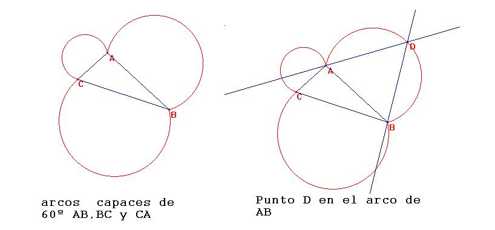
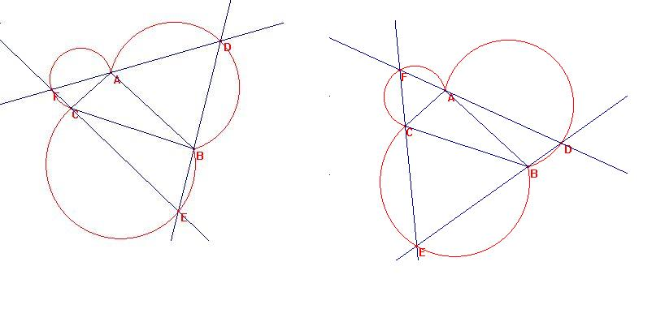
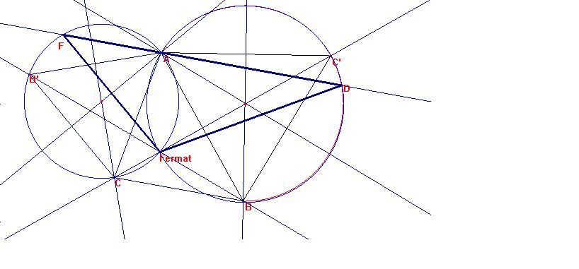

Dado un triángulo cualquiera circunscribir en él el triángulo
equilátero de área máxima.
Fernández García, F.R. (2001): "Optimización Multiobjetivo. Una perspectiva personal". En Actas del Encuentro de Matemátcos Andaluces. (Volumen 1). Conferencias Plenarias y Semblanzas. Universidad de Sevilla, Fundación El Monte, Universidad de Córdoba, Sadiel. Sevilla (pág 78-79)
Solución de Ricardo Barroso Campos. Profesor del Departamento de Didáctica
de las Matemáticas. Universidad de Sevilla (España)
Sea ABC un triángulo cualquiera.
Dado que se pide circunscribir en él un triángulo equilátero, tracemos los arcos capaces de 60º respecto de los tres lados. Serán aquellos desde los que el centro de la circunferencia los vea bajo 120º, por lo que trazamos desde cada vértice dos giros de 120º, tomando sus puntos de intersección como centro de los arcos.
Una vez construidos, tracemos por un punto cualquiera D del arco correspondiente de AB las rectas DA y DB, que cortarán, respectivamente, a los arcos de BC en E y de CA en F.

Evidentemente, DEF es un triángulo que cumple lo pedido, puesto que al ser CEA=60º y BFC=60º, es equilátero. Únicamente queda por constrastar el hecho de estar alineados E,C, y F.
Es: BCE=180º-CEB-EBC=180º-60º-(180º-ABC-ABD)=ABC+ABD-60º.
también: ACF= 180º-AFC-CAF=180º-60º-(180º-BAD-BAC)=BAD+BAC-60º.
De donde: BCE+BCA+ACF=ABC+ABD-60º+BCA+BAD+BAC-60º= (ABC+BCA+BAC)+(ABD+BAD-60º-60º)=
180º+ (180º-ADB-60º-60º)=180º c.q.d.

Así, pues, tendermos infinitos triángulos equiláteros que cumplen el ser circunscritos al original.
Evidentemente, todos ellos son semejantes entre sí, por lo que tendrá mayor área el de lado mayor.
Así, pues, el problema ahora es dado un triángulo ABC, tracemos por AC y AB arcos capaces de 60º, y hallemos el segmento FAD de mayor longitud. Para generalizar, construyamos cualquier triángulo ABC.
Construyamos los triángulos equiláteros hacia fuera ACB' y BCA'y las dos circunferencias circunscritas a los mismos.
Se tiene que BB' y CC' se cortan en el punto de Fermat.

Consideremos el triángulo FDFermat. Al recorrer F el arco correspondiente de la circunferencia circuncrita a ACB', los ángulos
AF(Fermat)=DF(Fermat), y AD(Fermat)=FD(Fermat), permanecen constantes, pues abarcan el mismo arco A(Fermat) de las correspondientes circunferencias. Es decir, los infinitos triángulos FD(Fermat) son semejantes. Luego, si tomamos el lado D(Fermat), sobre la circunfrencia circunscrita a CAB', el lado mayor está sobre el diámetro, de lo que se concluye que,
dado un triángulo cualquiera, el triángulo equilátero circunscrito de mayor áera es el que se construye trazando las tres circunferencias tales que abarquen en un arco de 60º cada lado, y desde el punto común a las tres, trazando los diámetros correspondientes.